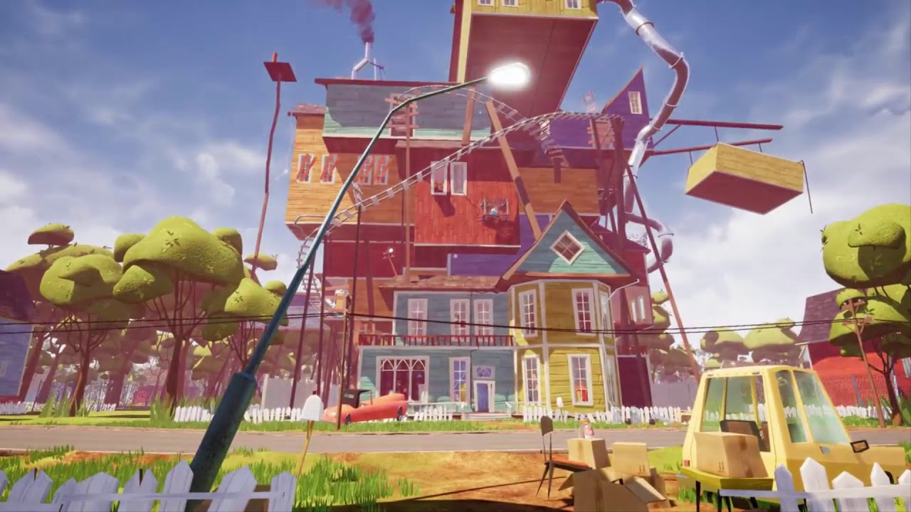

Hello Neighbor Beta 3
Hello Neighbor (Привет, сосед) — мультиплатформенная видеоигра в жанре survival horror, разработанная российской студией Dynamic Pixels и издаваемая компанией tinyBuild. Цель игры состоит в том, чтобы игрок успешно пробрался в подвал дома своего соседа, дабы узнать его тайну и раскрыть все секреты[1]. Искусственный интеллект позволяет соседу выполнять такие действия, как установка ловушек вдоль путей, которые игрок выполнил в предыдущий раз, вставка новых окон взамен разбитым и т. п.[2][3][4]
Игра была выпущена в качестве альфа-сборки на веб-сайте Dynamic Pixels в 2015 году, прежде чем она будет одобрена для продажи чтобы финансировать дальнейшее развитие, после чего студия подписала сделку с tinyBuild, чтобы опубликовать игру[5]. 8 декабря 2017 года игра была выпущена на Microsoft Windows, macOS и Xbox One. Сиквел "Hello Neighbor 2", планируется выпустить в 2021 году.
Игра делится на три акта, а также на альфа и бета версии. В первом акте главный герой, ещё ребёнок, видит, что сосед запирает кого-то в подвале. Игрок довольно быстро туда пробирается, но сосед ловит его и запирает у себя. Начинается второй акт с увеличенным домом и усложнёнными заданиями. Тогда игрок находит ключ в доме и убегает. В течение акта можно видеть эпизоды о истории семьи Соседа: смерть его жены в автокатастрофе, эпизод падения дочки с крыши дома